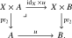
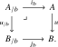

Yoneda density converts the universal properties of Kan extensions into pointwise limit and colimit formulas. We first combine the base-change theorems of Chapter 9 with duality to obtain cofinality results for limits and colimits. We then derive the pointwise formulas and apply them to weakly proper and weakly smooth functors.
Proposition 13.1.1. Let \(u\colon A \to B\) be a functor between small categories. Then the pullback functor \[ u^*\colon \Fun(B,\An) \to \Fun(A,\An) \] admits a right adjoint \[ u_*\colon \Fun(A,\An) \to \Fun(B,\An). \]
Proof
By Corollary 12.8.2 it will suffice to show that \(u^*\) preserves small colimits. But this is an instance of Lemma 7.3.1.
13.1.1 Base change and cofinality
Let \(A\) and \(B\) be small categories and let \(u\colon A \to B\) be a functor. Consider the restriction functor \[ u^*\colon \PSh(B) \to \PSh(A), \qquad F \mapsto F \circ u\catop. \] By Proposition 13.1.1, \(u^*\) admits a right adjoint \[ u_*\colon \PSh(A) \to \PSh(B). \]
Theorem 13.1.2. Consider a pullback square of small categories
 If \(u\) is proper or \(g\) is smooth, then for any presheaf \(F\colon A\catop \to \An\), the Beck–Chevalley map
\[
\BC_*\colon g^*u_*(F) \to u'_*f^*(F)
\]
is an isomorphism.
If \(u\) is proper or \(g\) is smooth, then for any presheaf \(F\colon A\catop \to \An\), the Beck–Chevalley map
\[
\BC_*\colon g^*u_*(F) \to u'_*f^*(F)
\]
is an isomorphism.
Proof
For every presheaf \(\Phi\colon {B'}\catop \to \An\), we need to show that the induced map \[ \Hom(\Phi, g^*u_*(F)) \to \Hom(\Phi, u'_*f^*(F)) \] is an equivalence. By adjunction, this corresponds to a map of the form \[ \Hom(u^*g_!\Phi,F) \to \Hom(f_!{u'}^*\Phi,F)\, . \] The Beck–Chevalley map \(\BC_*\colon g^*u_* \to u'_*f^*\) is, by definition, the mate of \[ \BC_!\colon f_!{u'}^* \longrightarrow u^*g_! \] under the adjunctions \(g_!\dashv g^*\), \(f_!\dashv f^*\), \(u^*\dashv u_*\), and \({u'}^*\dashv u'_*\). Consequently, under the preceding adjunction isomorphisms, the map induced by \(\BC_*\) is precomposition with \(\BC_!\). The latter is an isomorphism by Theorem 9.6.2 if \(g\) is smooth and by Theorem 9.6.6 if \(u\) is proper. Hence \(\BC_*\) induces an equivalence on hom animae out of every presheaf \(\Phi\), and is therefore an isomorphism.
Theorem 13.1.3. Let \(u\colon A \to B\) be an initial functor between small categories. For any functor \(F\colon B \to \An\) there is a canonical isomorphism \[ \lim_B F \iso \lim_A u^*F. \]
Proof
Consider the functor \(p\colon B \to *\), so that \(\lim_B = p_*\) and \(\lim_A = (pu)_* = p_*u_*\). We need to check that the unit map \(\id \to u_*u^*\) induces an isomorphism \(p_* \to p_*u_*u^*\). By passing to left adjoints, we may equivalently show that the map \(u_!u^*p^* \to p^*\) is an isomorphism. To this end, consider an anima \(X\). We compute both sides in terms of left fibrations over \(B\). The object \(p^*(X)\) corresponds to the projection \(\pr_2\colon X \times B \to B\). Similarly, \(u^*p^*(X)\) is the projection \(\pr_2\colon X \times A \to A\). The object \(u_!u^*p^*(X)\) is computed by factoring the composite \(u\circ \pr_2 \colon X \times A \to B\) into an initial functor followed by a left fibration. We use the factorization

Theorem 13.1.4. Let \(A\) and \(C\) be categories and assume that \(C\) admits \(A\)-indexed limits. Then, for any initial functor \(u\colon A \to B\), \(C\) also admits \(B\)-indexed limits and we have an identification \[ \lim_B = \lim_A u^* \] as functors \(\Fun(B,C) \to C\).
Proof
Choose a universe in which \(A\), \(B\), and \(C\) are small, and write \(\An\) for its category of animae. Let \(F\colon B \to C\) be a functor. We need to show that the functor \(C\catop \to \An'\), \(x \mapsto \Hom(x_B,F)\), is representable by some object \(\lim_B F\). We compute \begin{align*} \Hom(x_B, F) & \simeq \Hom(h_C(x)_B, h_C(F)) \\ & \simeq \Hom(h_C(x), \lim_{b \in B} h_C(F(b))) \\ & \simeq \lim_{b \in B} \Hom(h_C(x),h_C(F(b))) \\ & \simeq \lim_{b \in B} \Hom_C(x,F(b)) \\ & \simeq \lim_{a \in A} \Hom_C(x,F(u(a))) \\ & \simeq \Hom_C(x,\lim_{a \in A} F(u(a))). \end{align*} Hence the functor is represented by the limit \(\lim_{a \in A} F(u(a))\). The identification \(\lim_B = \lim_A u^*\) then follows from the Yoneda lemma.
Corollary 13.1.5. Let \(u\colon A \to B\) be a functor between categories. If \(A\) is small and \(u\) is initial, then \(\An\) admits \(B\)-indexed limits, and we have an identification \[ \lim_B = \lim_A u^* \] as functors \(\Fun(B,\An) \to \An\).
Corollary 13.1.6 (Cofinal computation of individual colimits). Let \(u\colon A \to B\) be a terminal functor between small categories, and let \(F\colon B \to C\) be a functor. Then \(F\) admits a colimit if and only if \(u^*F\) admits a colimit. In that case, the canonical map \[ \colim_A u^*F \longrightarrow \colim_B F \] is an isomorphism.
Proof
For every object \(x\) of \(C\), terminality of \(u\) and Theorem 13.1.3, applied to \(u\catop\), give a natural equivalence \begin{align*} \Hom_{\Fun(B,C)}(F,x_B) &\simeq \lim_{b : B\catop} \Hom_C(F(b),x) \\ &\simeq \lim_{a : A\catop} \Hom_C(F(u(a)),x) \\ &\simeq \Hom_{\Fun(A,C)}(u^*F,x_A). \end{align*} Thus \(F\) and \(u^*F\) have naturally equivalent cocone functors. One of these functors is representable if and only if the other is, and the same object represents both.
13.1.2 Pointwise Kan extensions
Notation 13.1.7. Given a functor \(u\colon A \to B\) between small categories \(A\) and \(B\) and an object \(b\) of \(B\), we may consider the functors

We first compute right Kan extensions of anima-valued presheaves. Let \(F\colon A\catop \to \An\) and let \(b\) be an object of \(B\). By the Yoneda lemma and the adjunction \(u^* \dashv u_*\), there are natural equivalences \begin{align*} u_*F(b) &\simeq \Hom_{\PSh(B)}(h_B(b),u_*F) \\ &\simeq \Hom_{\PSh(A)}(u^*h_B(b),F). \end{align*} The right fibration classified by \(u^*h_B(b)\) is the projection \(A_{/b} \to A\). Hence Corollary 12.6.4 gives an identification \[ u^*h_B(b) = \colim_{(a,\alpha) : A_{/b}} h_A(a). \] It follows that \begin{align*} u_*F(b) &\simeq \Hom_{\PSh(A)}\left(\colim_{(a,\alpha) : A_{/b}} h_A(a),F\right) \\ &\simeq \lim_{(a,\alpha) : (A_{/b})\catop} \Hom_{\PSh(A)}(h_A(a),F) \\ &\simeq \lim_{(A_{/b})\catop} F_{/b}. \end{align*} All these equivalences are natural in \(b\) and \(F\).
Theorem 13.1.8 (Pointwise formula for right Kan extensions). Let \(u\colon A \to B\) be a functor between small categories and let \(F\colon A\catop \to C\) be a functor. Assume that, for every object \(b\) of \(B\), the functor \(F_{/b}\colon (A_{/b})\catop \to C\) admits a limit. Then \(F\) admits a right Kan extension \(u_*F\colon B\catop \to C\) along \(u\catop\), satisfying the pointwise formula \[ u_*F(b) \simeq \lim_{(A_{/b})\catop} F_{/b}. \] In particular, if \(C\) admits \((A_{/b})\catop\)-indexed limits for every object \(b\) of \(B\), then restriction admits a right adjoint \[ u_*\colon \Fun(A\catop,C) \to \Fun(B\catop,C). \]
Proof
Choose a universe so that \(C\) is small. The Yoneda embedding induces fully faithful functors \[ h_C\colon \Fun(B\catop,C) \to \Fun(B\catop,\PSh(C)) \simeq \Fun(C\catop,\PSh(B)), \] and similarly for \(B\) replaced by \(A\). The induced restriction functor \(u^*\colon \Fun(C\catop,\PSh(B)) \to \Fun(C\catop,\PSh(A))\) admits a right adjoint \[ u_*\colon \Fun(C\catop,\PSh(A)) \to \Fun(C\catop,\PSh(B)), \] For a functor \(F\colon A\catop \to C\) and an object \(b\) of \(B\), the anima-valued pointwise formula gives \[ u_*(h_C(F))(b) = \lim_{(a,s) : (A_{/b})\catop} h_C(F(a)) \simeq h_C(\lim_{(A_{/b})\catop} F(a)), \] where the final equivalence follows from the universal property of the limit in \(C\). Thus \(u_*(h_C(F))\) is pointwise representable and therefore lies in the essential image of \[ h_C\colon \Fun(B\catop,C) \longrightarrow \Fun(B\catop,\PSh(C)) \] by Corollary 12.3.17. Denote its unique preimage by \(u_*F\). For \(G\colon B\catop \to C\), full faithfulness of the Yoneda embedding and the ambient adjunction give natural equivalences \begin{align*} \Hom_{\Fun(B\catop,C)}(G,u_*F) &\simeq \Hom_{\Fun(B\catop,\PSh(C))}(h_C(G),u_*h_C(F)) \\ &\simeq \Hom_{\Fun(A\catop,\PSh(C))}(u^*h_C(G),h_C(F)) \\ &\simeq \Hom_{\Fun(A\catop,C)}(u^*G,F). \end{align*} This proves the universal property of the right Kan extension and the asserted pointwise formula. If the required limits exist for every functor \(F\colon A\catop \to C\), the pointwise criterion for adjunctions from Proposition 6.2.3 shows that these right Kan extensions assemble into a right adjoint to restriction.
Theorem 13.1.9 (Pointwise formula for left Kan extensions). Let \(u\colon A \to B\) be a functor between small categories and let \(F\colon A \to C\) be a functor. Assume that, for every object \(b\) of \(B\), the composite \(F\circ i_b\colon A_{/b} \to C\) admits a colimit. Then \(F\) admits a left Kan extension \(u_!F\colon B \to C\) along \(u\), satisfying the pointwise formula \[ u_!F(b) \simeq \colim_{A_{/b}} F \circ i_b. \] In particular, if \(C\) admits \(A_{/b}\)-indexed colimits for every object \(b\) of \(B\), then restriction admits a left adjoint \[ u_!\colon \Fun(A,C) \to \Fun(B,C). \]
Proof
Apply Theorem 13.1.8 to the functor \(F\catop\colon A\catop \to C\catop\). For every object \(b\) of \(B\), the required limit in \(C\catop\) is the opposite of the assumed colimit of \(F\circ i_b\). The resulting right Kan extension along \(u\catop\) becomes, upon passing to opposite categories, a left Kan extension of \(F\) along \(u\), with the asserted pointwise formula.
Corollary 13.1.10. Let \(u\colon A \to B\) be a functor and let \(\Phi\colon C \to D\) be a functor such that \(C\) and \(D\) both admit \((A_{/b})\catop\)-indexed limits for any object \(b\) of \(B\), which are preserved by \(\Phi\). Then for every presheaf \(F\colon A\catop \to C\) the Beck–Chevalley map \[ \Phi(u_*(F)) \to u_*(\Phi(F)) \] is a natural isomorphism.
Proof
It suffices to show for every object \(b\) of \(B\) that the induced map \(\Phi(u_*(F))(b) \to u_*(\Phi(F))(b)\) is an isomorphism. Under the pointwise formula of Theorem 13.1.8, this is the comparison expressing that \(\Phi\) preserves the relevant limit.
13.1.3 Weakly proper functors
Lemma 13.1.11. Let \(C\) be a small category. The following conditions are equivalent.
(i) \(C\) is weakly contractible;
(ii) \(C\catop\) is weakly contractible;
(iii) taking the associated \(C\)-indexed constant functor defines a fully faithful functor \[ \An\hookrightarrow\Fun(C,\An) \] and its essential image consists of those functors sending all maps of \(C\) to isomorphisms in \(\An\).
(iv) for any category \(D\), taking the associated \(C\)-indexed constant functor defines a fully faithful functor \[ D\hookrightarrow\Fun(C,D)\, . \]
Proof
Corollary 12.2.6 shows that conditions (i) and (ii) are equivalent. Conditions (iii) and (iv) each imply that the constant-functor embedding \(\An\to\Fun(C,\An)\) is fully faithful, where in condition (iv) we take \(D=\An\). We first show that condition (i) implies both conditions (iii) and (iv). If \(C\) is weakly contractible, then the unique functor \(C\to [0]\) exhibits \([0]\) as the localization of \(C\) by all morphisms of \(C\). In other words, for any category \(D\), the associated constant functor \(X\mapsto X_C\) defines a fully faithful functor of the form \[ D\hookrightarrow\Fun(C,D) \] whose essential image consists of those functors \(F\colon C\to D\) with the property that \(F(u)\colon F(x)\to F(y)\) is an isomorphism in \(D\) for any morphism \(u\colon x\to y\) in \(C\). For \(D=\An\), this also identifies the essential image required in condition (iii). It remains to prove that full faithfulness of \(\An\to\Fun(C,\An)\) implies condition (i). Recall from Remark 9.3.4 that, if \(X\) is a small anima and if \(e\) is the terminal object of \(\An\), then we have a canonical isomorphism \[ \Hom(\Pi_{\infty}(C),X)=\Hom(e_C,X_C)\, . \] If the functor \(X\mapsto X_C\) is fully faithful, the isomorphism \[ \Hom(e,X)=\Hom(e_C,X_C) \] can thus be reinterpreted as asserting that the map \(\Pi_{\infty}(C)\to e\) induces an isomorphism of the form \[ \Hom(e,X)=\Hom(\Pi_{\infty}(C),X) \] for all \(X\). Therefore, by virtue of Corollary 12.3.14, the map \(\Pi_{\infty}(C)\to e\) must be an isomorphism in \(\An\), which means that \(C\) is weakly contractible by definition.
Definition 13.1.12. A functor \(f\colon A\to B\) is weakly proper if, for any object \(b\) of \(B\), the induced functor \(A_b\to A_{/b}\) is terminal.
A functor \(f\colon A\to B\) is weakly smooth if, for any object \(b\) of \(B\), the induced functor \(A_b\to A_{b/}\) is initial.
Example 13.1.13. Any proper functor is weakly proper. In particular, (locally) cocartesian functors are weakly proper. Dually, smooth functors are weakly smooth. In fact, a functor \(u\colon A \to B\) is weakly proper if and only if \(u\catop\colon A\catop\to B\catop\) is weakly smooth. Examples of weakly proper functors that are not locally cocartesian will come from simplicial approximation; see Proposition 15.1.7.
Lemma 13.1.14. Let \(A\) be a small category and \(X\) a small anima. Then \(\Hom_\An(\Pi_{\infty}(A),X)\) is the limit of the \(A\)-indexed constant functor with value \(X\).
Proof
We know that \(\Pi_{\infty}(A)\) is the colimit of the constant \(A\)-indexed diagram with value the terminal object \(e\) of \(\An\) – see Remark 9.3.4. We thus have \[ \Hom_\An(\Pi_{\infty}(A),X)=\Hom(e_A,X_A) \] where \(X_A\) denotes the constant \(A\)-indexed diagram with value \(X\). But we also know that \(\Hom(e_A,-)\) is the limit functor for \(A\)-indexed diagrams.
Lemma 13.1.15. Let \(C\) be a category and let \(f\colon A\to B\) be a weakly proper functor. Assume that \(C\) admits \(A_b\catop\)-indexed limits for every object \(b\) of \(B\). Then the functor \[ f^*\colon\Fun(B\catop,C)\to\Fun(A\catop,C) \] has a right adjoint \[ f_*\colon\Fun(A\catop,C)\to\Fun(B\catop,C), \] and, for an object \(b\) of \(B\) and any functor \(F\colon A\catop\to C\), there is a canonical isomorphism \[ f_*(F)(b)\simeq\lim_{A_b\catop}\, F\vert_{A_b\catop}, \] where \(F\vert_{A_b\catop}\) denotes restriction along \(A_b\catop\hookrightarrow A\catop\).
Proof
By weak properness, the functor \(A_b\to A_{/b}\) is terminal, so its opposite \(A_b\catop\to(A_{/b})\catop\) is initial. Applying Theorem 13.1.4, we see that \(C\) admits \((A_{/b})\catop\)-indexed limits, computed over \(A_b\catop\). The claim now follows from Theorem 13.1.8.
Proposition 13.1.16. Let \(f\colon A\to B\) be a functor between categories. We suppose that the following properties hold.
(i) The functor \(f\) is either weakly proper or weakly smooth.
(ii) For each object \(b\) of \(B\), the fiber \(A_b\) is weakly contractible.
Then \(f\) exhibits \(B\) as the localization of \(A\) by \[ W:=\sum_{b : B^\simeq}\Map([1],A_b) \] (the family of maps in \(A\) that are sent to identities in \(B\)).
Proof
We will prove the case where \(f\) is weakly proper (the weakly smooth case follows from the weakly proper one by considering \(f\catop\colon A\catop\to B\catop\)).
The universal property of localization gives a commutative triangle of the form
 where \(\gamma\colon A\to A[W^{-1}]\) is the localization of \(A\) by \(W\).
We will show that \(\varphi\) is an equivalence.
where \(\gamma\colon A\to A[W^{-1}]\) is the localization of \(A\) by \(W\).
We will show that \(\varphi\) is an equivalence.
We may choose a universe \(\Cat\) so that \(A\) and \(B\) are small.
The commutative triangle above thus gives rise to a commutative triangle of the form
 in which \(\gamma^*\) is fully faithful, with essential image those functors that send any map
in \(W\) to an isomorphism of \(\An\).
We claim that \(f^*\) is fully faithful. Equivalently, this means that, for any functor
of the form \(E\colon B\catop\to\An\), the unit map
\[
\eta_E\colon E\to f_*f^*(E)
\]
is an isomorphism. We observe that the restriction of \(f^*(E)\)
to the fiber \(A_b\) is the constant
functor with value \(E(b)\).
By virtue of Lemma 13.1.14 and Lemma 13.1.15
this implies that, for each object \(b\) of \(B\), there is a canonical
isomorphism of the form:
\[
\Hom(\Pi_{\infty}(A_b\catop),E(b))\simeq f_*f^*(E)(b)\, .
\]
Since \(A_b\) is weakly contractible, so is \(A_b\catop\) and, by Corollary 12.3.7,
the previous identification can be rewritten as:
\[
E(b)=f_*f ^*(E)(b)\, .
\]
This isomorphism agrees with the evaluation of \(\eta_E\) at \(b\), and this proves that \(f^*\) is fully faithful.
Since \(\gamma^*\) is fully faithful as well, the functor \(\varphi^*\) must also be fully faithful.
in which \(\gamma^*\) is fully faithful, with essential image those functors that send any map
in \(W\) to an isomorphism of \(\An\).
We claim that \(f^*\) is fully faithful. Equivalently, this means that, for any functor
of the form \(E\colon B\catop\to\An\), the unit map
\[
\eta_E\colon E\to f_*f^*(E)
\]
is an isomorphism. We observe that the restriction of \(f^*(E)\)
to the fiber \(A_b\) is the constant
functor with value \(E(b)\).
By virtue of Lemma 13.1.14 and Lemma 13.1.15
this implies that, for each object \(b\) of \(B\), there is a canonical
isomorphism of the form:
\[
\Hom(\Pi_{\infty}(A_b\catop),E(b))\simeq f_*f^*(E)(b)\, .
\]
Since \(A_b\) is weakly contractible, so is \(A_b\catop\) and, by Corollary 12.3.7,
the previous identification can be rewritten as:
\[
E(b)=f_*f ^*(E)(b)\, .
\]
This isomorphism agrees with the evaluation of \(\eta_E\) at \(b\), and this proves that \(f^*\) is fully faithful.
Since \(\gamma^*\) is fully faithful as well, the functor \(\varphi^*\) must also be fully faithful.
In order to prove that \(\varphi^*\) is an equivalence, it suffices to check that both fully faithful functors \(f^*\) and \(\gamma^*\) have the same essential image in \(\PSh(A)\). Since \(f^*\) is the composition of \(\varphi^*\) and \(\gamma^*\), it suffices to check that an object in the essential image of \(\gamma^*\) is in the essential image of \(f^*\). Let \(E\colon A\catop\to\An\) be a functor sending any map in \(W\) to an isomorphism of \(\An\). We will prove that the co-unit map \[ \varepsilon_E\colon f^*f_*(E)\to E \] is an isomorphism. Let \(a\) be an object of \(A\). The restriction of \(E\) to each fiber \(A_{f(a)}\catop\) sends each map to an isomorphism. Since the fiber is weakly contractible, this means that the restriction to the fiber is constant with value \(E(a)\). In other words, the functor \[a\colon [0]\to A_{f(a)}\catop\] induces isomorphisms \[ \lim_{A_{f(a)}\catop}\, E\vert_{A_{f(a)}\catop}\simeq \Hom(\Pi_{\infty}(A_{f(a)}\catop),E(a))\simeq E(a)\, . \] By virtue of Lemma 13.1.15, this means that there is a canonical isomorphism of the form \[ f_*(E)(f(a))=E(a)\, . \] The composition of this isomorphism with the defining identification \(f^*f_*(E)(a)=f_*(E)(f(a))\) coincides with the evaluation of \(\varepsilon_E\) at \(a\). Therefore, \(f^*f_*(E)=E\) and thus \(E\) lies in the essential image of \(f^*\). Since \(\varphi^*\) is an equivalence, so is its left adjoint \(\varphi_!\). This implies finally that the functor \(\varphi\) itself is fully faithful, by Proposition 12.2.11. By virtue of Proposition 11.2.11, it suffices now to prove that the map \[ \varphi^\simeq\colon (A[W^{-1}])^\simeq\to B^\simeq \] is a cover. By Corollary 11.2.7, it suffices to prove that \[ f^\simeq\colon A^\simeq\to B^\simeq \] is a cover. But condition (ii) tells us in particular that the projection \[ \pr_1\colon B^\simeq\times_B A\to B^\simeq \] induces an equivalence after applying the functor \(\Pi_{\infty}\). In other words, it exhibits \(B^\simeq\) as the localization of \(B^\simeq\times_B A\) by all maps. Therefore, by virtue of Corollary 11.2.16, the induced map \[ (\pr_1)\colon(B^\simeq\times_B A)^\simeq\to B^\simeq \] is a cover. To conclude, we observe that \((B^\simeq\times_B A)^\simeq=A^\simeq\) holds over \(B^\simeq\).